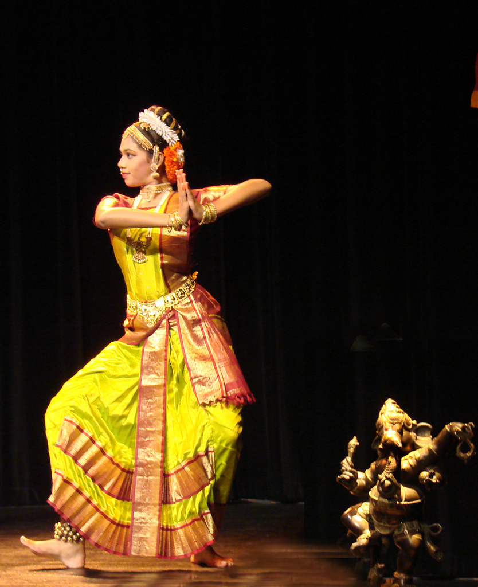
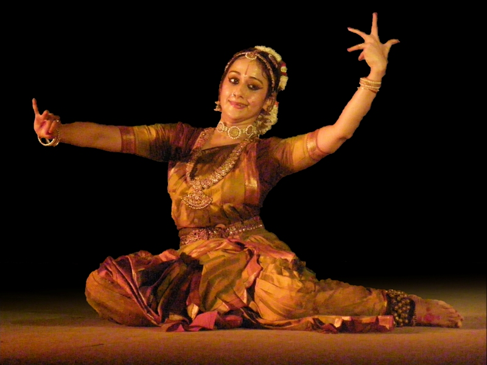

Dance India
Helping dancers stay inspired...
Kuchipudi

Kuchipudi /kuːtʃiˈpuːdi/ (Telugu: కూచిపూడి) is a Classical Indian dance from Andhra Pradesh, India. It is also popular all over South India. Kuchipudi is the name of a village in the Divi Taluka of Krishna district that borders the Bay of Bengal and also the surname of the resident Brahmins practicing this traditional dance form, it acquired the present name.[1] The performance usually begins with some stage rites, after which each of the characters come on to the stage and introduces him/herself with a dharavu (a small composition of both song and dance) to introduce the identity, set the mood, of the character in the drama. The drama then begins. The dance is accompanied by song which is typically Carnatic music. The singer is accompanied by mridangam (a classical South Indian percussion instrument), violin, flute and the tambura (a drone instrument with strings which are plucked). Ornaments worn by the artists are generally made of a lightweight wood called Boorugu. It originated in the seventh century.
Style
Bharata Muni who wrote the Natya Shastra about 3000 years ago had explained various aspects of this dance form. Later sometime in the 13th century, the impetus to kuchipudi was given by Sidhendra Yogi. Siddhendra Yogi redefined the dance form. Siddhendra Yogi’s former name was Siddhappa who was an orphan Brahmin. Kuchipudi dancers are quicksilver and scintillating, rounded and fleet-footed, they perform with grace and fluid movements. Performed to classical Carnatic music, it shares many common elements with Bharatanatyam. In its solo exposition Kuchipudi numbers include 'jatiswaram' and 'tillana' whereas in nrityam it has several lyrical compositions reflecting the desire of a devotee to merge with God. In an era of the degeneration of dance due to exploitation of female dancers, an ascetic, Beyond the stylistic differences of Kuchipudi and Bharatanatyam steps, there are certain types of dances that are unique to Kuchipudi: Specifically there is the Tarangam which is unique in that t plate with two diyas (small oil-burning candles) in his or her hands while balancing a "kindi" (small vessel) containing water. The dance styles in the state are based on the standard treatises, Abhinaya Darpana and Bharatarnava of Nandikeshwara, which is sub-divided into Nattuva Mala and Natya Mala. Nattuva Mala is of two types — the Puja dance performed on the Balipitha in the temple and the Kalika dance performed in a Kalyana Mandapam. Natya Mala is of three kinds — ritual dance for gods, Kalika dance for intellectuals and Bhagavatam for common place. The Natya Mala is a dance-drama performed by a troupe, consisting only of men, who play feminine roles

Movements and music
The songs in Kuchipudi are mimed with alluring expressions, swift looks and fleeting emotions evoking the rasa. In Tarangam at times she places a pot full of water on her head and dances on the brass plate. The song accompanying this number is from the well known Krishna Leela Tarangini, a text which recounts the life and events of Lord Krishna In expressional numbers a dancer sometimes chooses to enact the role of Satyabhama, the proud and self-assured queen of Lord Krishna, from the dance-drama Bhama Kalapam. She goes through various stages of love. When in separation from Lord Krishna, she recalls the happy days of union and pines for him. At last they are reunited when she sends him a letter. One more number from the Kuchipudi repertoire that deserves mention is Krishna Shabdam, in which a milkmaid invites Krishna for a rendezvous in myriads of ways giving full scope for the dancer to display the charms of a woman Kuchipudi is as ancient as Natya astra (1st century BC)in which mention is made of a dance drama form besides solo. An invocatory verse also indicates that four forms of dance were prevalent then, of which ‘Dakshintya’ or South Indian form is apparently the earliest version of Kuchipudi. There is also historical evidence that the art flourished during the reign of the Satavahanas (2nd century BC). Over the centuries as the performances were dedicated to the worship of Vishnu, the form came to be known as Bhagavata Mela Natakam. It was during Siddhendra Yogi’s time (14th – 15th century) that it came to be known as Kuchipudi, named after the village established by Siddhendra Yogi where his follower, the Brahmin performers settled down. Two parallel schools of dance have existed since time immemorial, viz. Nattuva Mela and Natya Mela. The former evolved into Bharat Natyam and the latter into Kuchipudi. There is difference in the presentation itself. The main difference lies in the abhinaya. The graceful, lasya oriented Kuchipudi gives importance to Vakyartha abhinaya go together. Bharatanatyam on the other hand is Mudra oriented and gives importance to Padartha abhinaya, each word interpreted through mudras. Certain movements are characteristic to Kuchipudi. Vachika abhinaya (use of words/dialogues) is also a special feature of the Kuchipudi style.

Kuchipudi dancers set a Guinness World Record
Over 2,800 Kuchipudi dancers, including 200-plus natyagurus created a Guinness World Records on December 26, 2010 performing Hindolam Thillana at the GMC Balayogi Stadium in Hyderabad. The spectacular show performed by dancers from 15 countries and every state was staged in praise of Kuchipudi choreographer Siddhendhra Yogi. The 11-minutes programme was part of the concluding ceremony of the three-day second International Kuchipudi Dance Convention. The chief guest, the President of India, Smt. Pratibha Patil, the governor of Andhra Pradesh, E.S.L. Narasimhan, and the chief minister, N. Kiran Kumar Reddy, congratulated the participants. Kuchipudi exponents Vempati Chinasatyam, Vedantam Satyanarayana Sarma, Yamini Krishnamurthy, Raja Reddy Radha Reddy, and Sobha Naidu were felicitated by the president. Rapturous applause filled the venue as the programme came to an end and a representative from Guinness World Records announced that she was speechless with the magnitude of the programme. Later, disciples of Raja Reddy Radha Reddy performed Devi Smriti invoking the goddess to remove people’s sufferings. Kiran Kumar Reddy, who had announced an assistance of 25 lakh Rupees on the inaugural day, handed over a cheque for the amount to the Union minister of state for Human Resources Development, Smt. Daggubati Purandeswari.